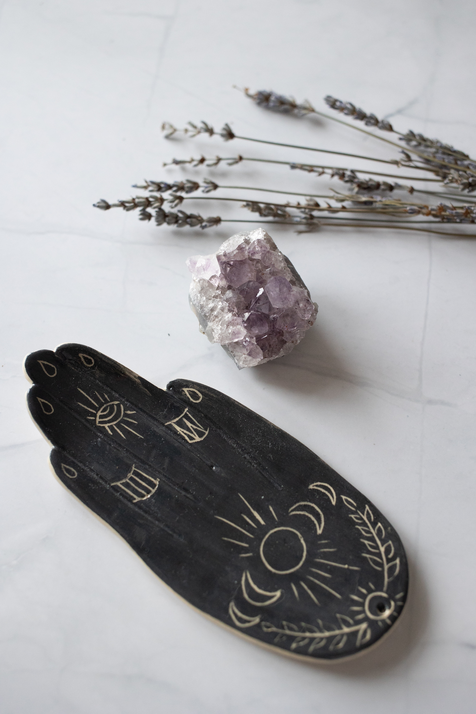

A History of Crystals
Crystals have been used for thousands of years!
In fact, evidence suggests that Crystal Healing has been used since the Sumerians of Mesopotamia and Ancient Egyptians, which add up to around 6,000 years ago. However, modern techniques/uses for Crystal Healing most likely dates back to the Chinese concepts of chi (or qi) or life energy and Hindu and Buddhist teachings of Chakras, which are life-energy sources that connect our physical bodies to the metaphysical.
For thousands of years, people have used Crystals to help aid people physically (such as to draw out poison, to help ease bodily pain, to increase longevity, etc.), mentally/emotionally (to ward off nightmares, to ease fear/anxiety, etc.), and spiritually (to be more spiritually connected, to be more in tuned with higher planes of thinking, etc.).

How to Choose your Crystal
Let’s say you wish to purchase a Crystal. How do you choose one?
Well, the first thing you need to do is to decide what you are needing as of now, if anything.
Are you in physical pain and, if so, where?
Are you suffering from depression, anxiety, or stress?
Are you wanting to improve meditation, attempt astral projection, or conduct a spell?
Once you know what you are needing, look up different Crystals that can help you with your specific need.
Another approach is to look up crystals first and see if any carry specific properties that catch your eye or you feel you would benefit from at the moment.
Sometimes the Crystal chooses you!
If you live in a place that has a holistic shop, drop by and see if there’s a stone calling out to you.
If you find yourself instinctually drawn to a particular Crystal, that may be a sign that you are meant to have it.
It’s possible that you may actually need something within this stone’s qualities/traits and not even know it.
Trust your intuition and allow your subconscious to help guide and assist you in finding the right Crystal for you.
When in doubt and/or if you don’t have anything particular need in mind, I recommend to beginners to try Quartz (specifically Clear Quartz or maybe Rose Quartz) or Amethyst. They are the basics that most magic practitioners that use Crystals own and swear by them since they contain powerful qualities and can be flexible and diverse in their uses.